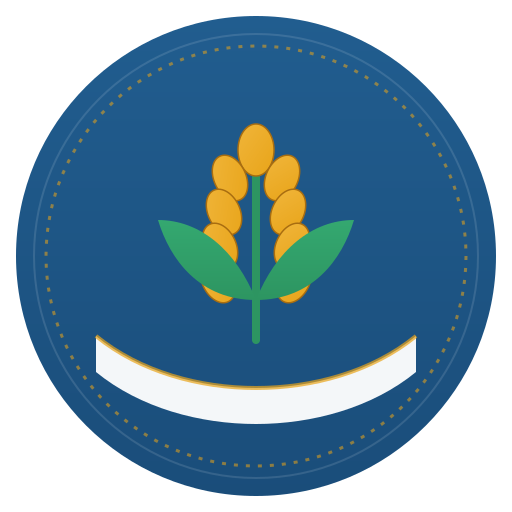
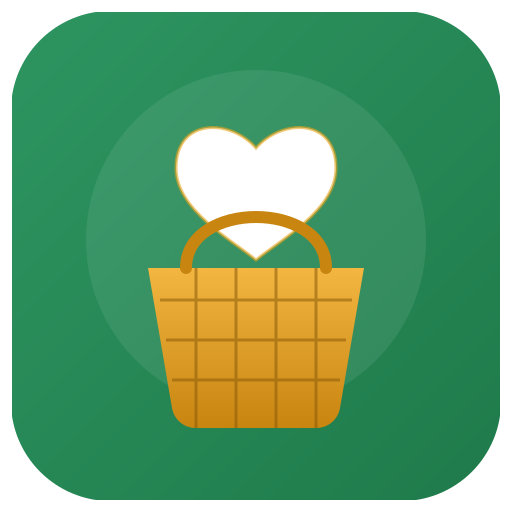
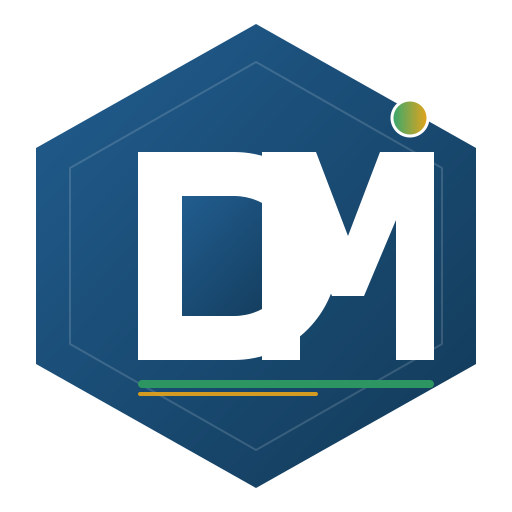
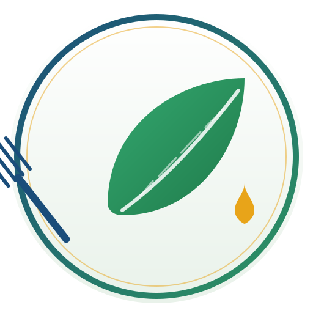
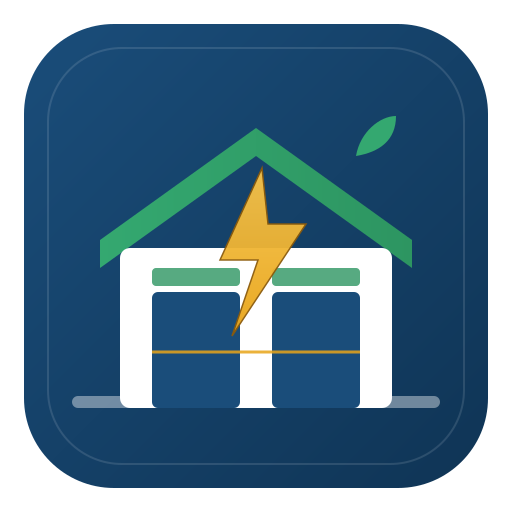
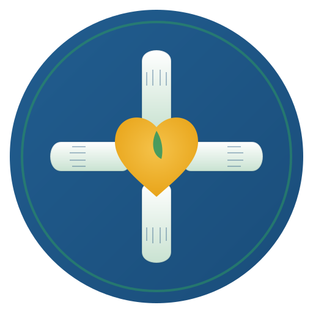

1. Épi solidaire
Un épi de blé doré porté par des mains stylisées, symbole universel de la banque alimentaire. Anneau doré pointillé pour évoquer la traçabilité et l'inventaire.

2. Panier de partage
Panier d'osier surmonté d'un cœur : la générosité qui remplit le panier. Excellent pour les documents destinés aux organismes bénéficiaires et donateurs.

3. Monogramme DMi
Version modernisée du logo DMi actuel : forme hexagonale (industrie/logistique), lettres blanches nettes et le point du « i » en dégradé vert-doré. Idéal pour un usage administratif.

4. Feuille et fourchette
Grande feuille verte et fourchette bleue croisées : anti-gaspillage et alimentation saine. Fond blanc, très lisible sur documents imprimés et en-têtes d'e-mail.

5. Entrepôt intelligent
Entrepôt avec toit vert et un éclair doré au centre : gestion en temps réel, distribution rapide, technologie au service de la mission. Traduit visuellement le côté « système intégral ».

6. Cercle solidaire
Quatre mains disposées en cercle qui se rejoignent sur un cœur doré central : bénévoles, employés, organismes et bénéficiaires unis. Message très fort pour la mission sociale.